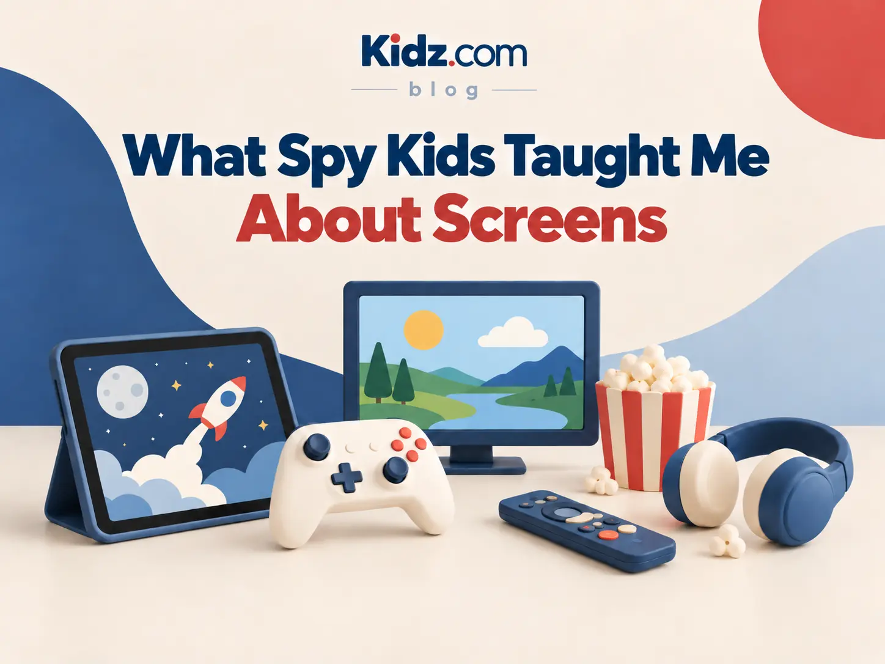

Screens and childhood
What Spy Kids taught me about screen time
Some screen experiences add something to childhood. Others quietly consume it.

Term 3 holidays. 2001.
I remember walking out of my first-ever big-screen movie.
Spy Kids.
The movie had it all: jet packs, robots and a global threat that could only be stopped by a seven- and ten-year-old. It all made total sense to my six-year-old brain.
As we walked out—and this feels ridiculous to say now—I felt warm and fuzzy. I think it may have been the happiest I had felt in my life up until then.
I relived it for days with my cousins while we recounted how the autopilot of the submarine at one point said, “Now flushing your poop.”
Magic.
A few years later, I had another experience.
My cousin and I spent three lazy summer afternoons trying to complete a video game that I have since found out is pretty much impossible.
So much so that even now, 20 years later, there are YouTube channels dedicated to teaching you how—if you do everything perfectly and have a ton of luck—you can sometimes beat the game.
It was called Yu-Gi-Oh! Forbidden Memories.
And my cousin and I never beat it.
But we had three afternoons of strategising, eating and teamwork.
Absolute magic.
Both of these screen moments come to mind as a thirty-something-year-old. The sheer joy and wonder seem to be printed on my brain.
But I have some less warm memories.
There have been far too many nights where this thirty-something-year-old, now with a job, a mortgage and what may be too many children, has become stressed and dealt with that stress by getting lost on YouTube Shorts until three in the morning.
That experience doesn’t have the same feel-good memory attached. I woke up the next morning with the same problems to solve, but dopamine-depleted and exhausted.
While I can still quote the Spy Kids line from almost three decades ago, I can’t tell you what a single one of those short videos was.
Zero magic.
There was another time when I got addicted to Candy Crush. It was all I could think of, day in, day out. Regardless of what I was doing, my heart was busy dreaming of crushing candies. I saw it when I shut my eyes, I dreamed of it, and it took me multiple attempts at deleting it from my phone before I eventually crushed that addiction.
Negative magic.
My first two screen stories were genuinely beautiful moments for me. They had connection, a sense of wonder and a ton of joy.
But other times, I have had screens hook me, hold me and expose me to things I probably didn’t need to see.
As we think about when and how we use screens at Kidz.com, our philosophy is quite simple.
We try to replicate the first two stories.
And we try to avoid the second two.
At Kidz.com, when we watch a movie, we all watch it together at the end of our day. We eat ice cream and maybe have some popcorn. We hope that the kids spend the week looking forward to it.
We have a Nintendo Wii with bowling, tennis, dancing and more. The kids go toe-to-toe with each other, often with a group cheering them on.
I have dreams of getting a new console with four controllers. We could play four-way Mario Kart in the holidays. Think of the carnage that would be.
Hopefully, the kids who spend time with us end up with something worth remembering.